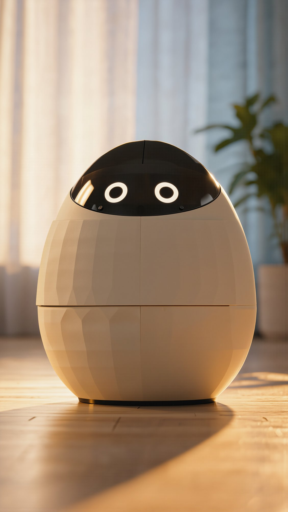

01 · Während du weg bist
Zappy bleibt zu Hause.
Er leistet deinen Katzen Gesellschaft,
merkt, wenn etwas nicht stimmt,
und bringt es leise wieder in Ordnung.
Damit du ganz entspannt verreisen kannst.
ZappyAn dich
- 03:14Luna hat ihren Wassernapf umgestoßen.Zappy hat ihn aufgestellt und den Catsitter gebeten, ihn aufzufüllen.
- 09:40Der Trinkbrunnen ist ausgegangen.Zappy hat ihn neu gestartet. Das Wasser läuft wieder.
- 14:05Mochi war im Schlafzimmer eingesperrt.Zappy hat sie gefunden. Der Catsitter hat sie um 15:00 rausgelassen.
- 22:30Die Heizung ist aus. 16 °C.Zappy hat dir Bescheid gesagt. Sie läuft wieder.
Gute Nacht. Luna und Mochi sind satt, sicher und schlafen.

ZappyAn den Catsitter
- 08:20Mochi hat nur die Hälfte ihres Frühstücks gefressen.Schau beim nächsten Besuch mal nach ihr.
- 12:10Katzenklo: 4 Besuche seit heute Morgen.Mehr als sonst. Bitte schau nach ihr.
- 19:52Mochi hat gerade zu Abend gefressen.Zeit für ihre Tablette.
- 20:05Catsitter: Tablette gegeben.Danke. Ich sage Mochis Familie Bescheid.
Der Catsitter sieht, was zwischen den Besuchen passiert ist.
02 · Mit deinem Catsitter
Ein zweites Paar Augen für deinen Catsitter.
Zappy achtet darauf, wann deine Katzen
fressen, trinken und aufs Klo gehen,
und sagt deinem Catsitter,
was wann zu tun ist.